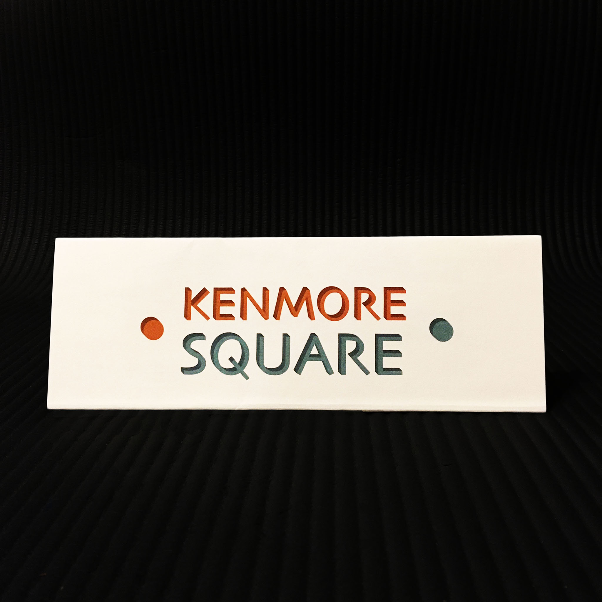
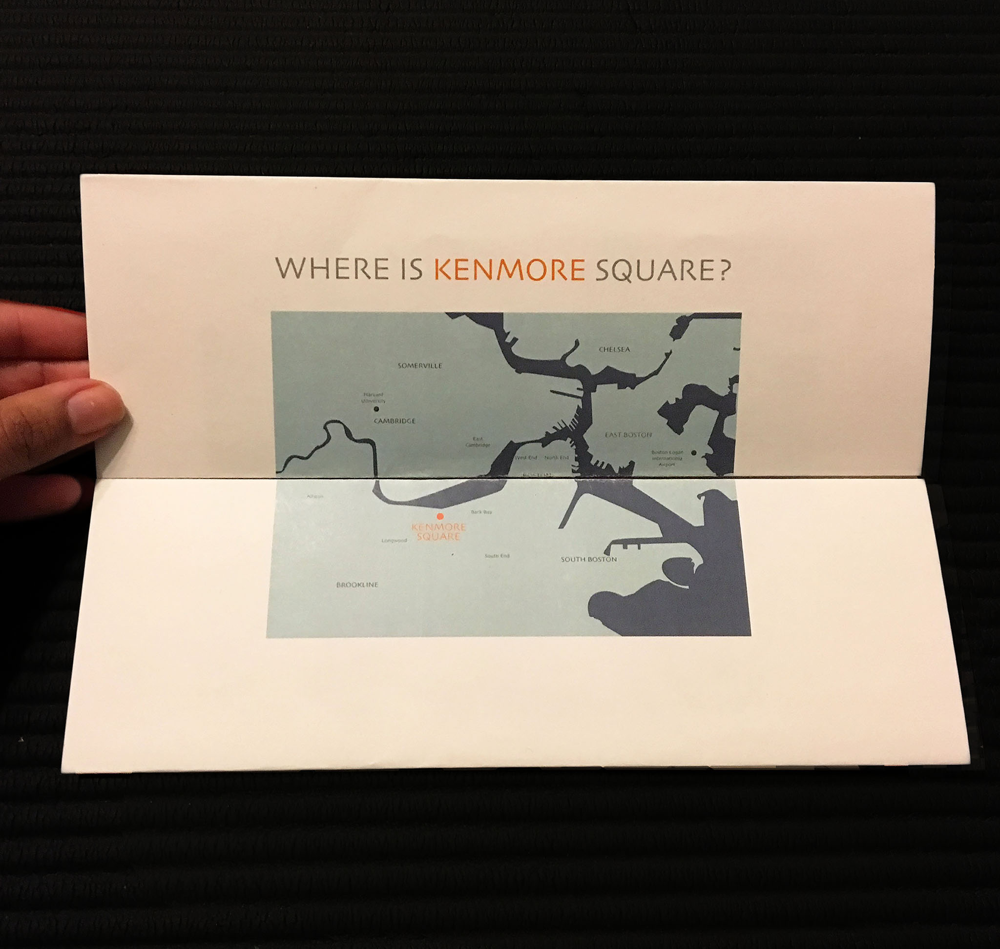
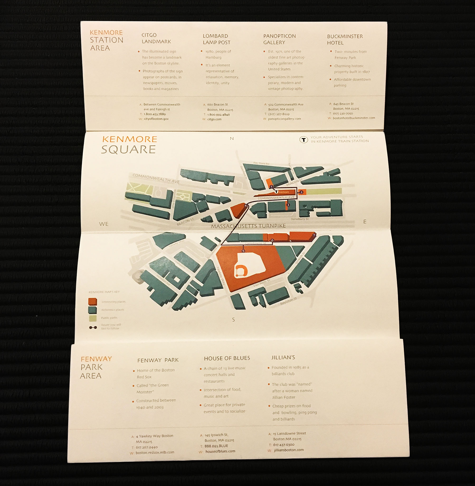
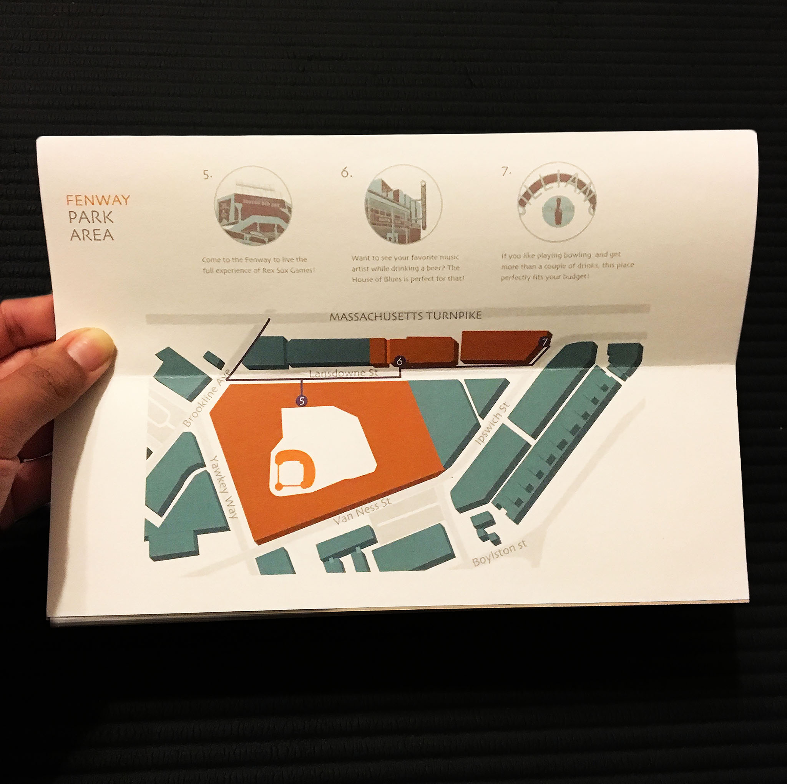
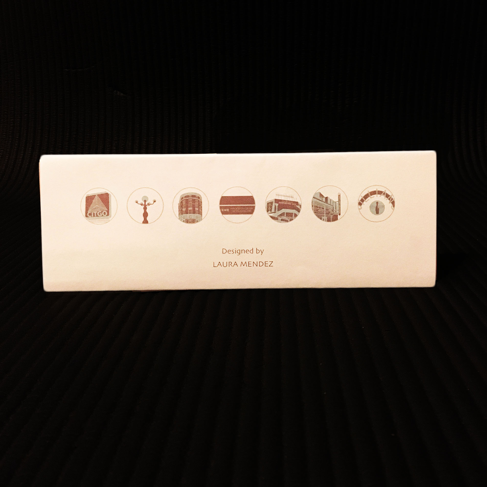

A curated map of the kenmore area. It features seven specific places and suggests one possible route. The centered map shows all seven places and the other two maps are closed ups of the Fenway area and Kenmore station area; the user can tear those close ups apart conserving both the map and the extra information of each place.